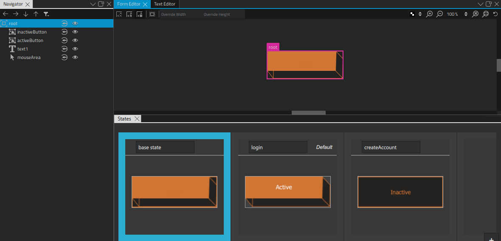
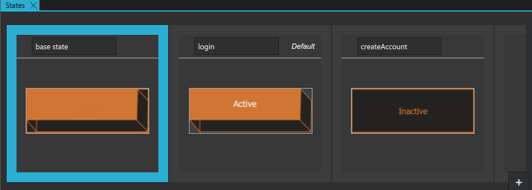
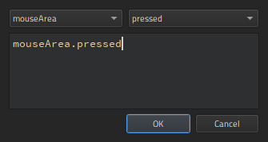
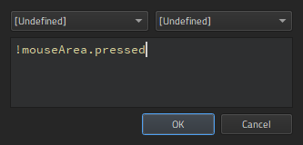
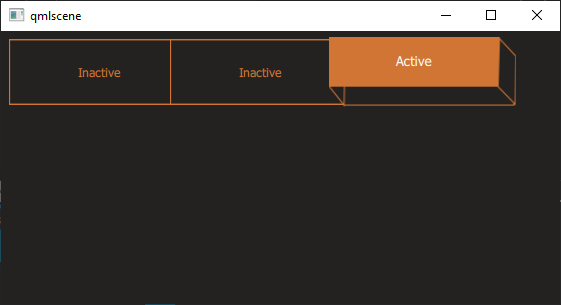

Creating Scalable Buttons and Borders
You can use the Border Image component to display an image, such as a PNG file, as a border and a background.
Use two border images and suitable graphics to change the appearance of a button when it is clicked. You can use use states to determine which image is visible depending on whether the mouse button is pressed down. You could add more images and states to change the appearance of the button depending on other mouse events, such as hovered.
Use a Text component to add button text. You can use states also to change the button text color and font size. For example, you can scale the button text up or down.
Add a Mouse Area component that covers the whole area and reacts to mouse events.

Creating the Button Component
To create a button component, select File > New File > Qt Quick Files > Qt Quick UI File >
Choose to create a UI file called Button.ui.qml (for example).
Note: Components are listed in Components > My Components only if the filename begins with a capital letter.
Constructing the Button Component
To construct the button component:
- Click Design to edit the UI file in the 2D view.
- Select Assets > to copy the image files you want to use to the project folder.
- In Navigator, select the root component and set the width (W) and height (H) of the button in the Properties view to match the size of the images you plan to use. This specifies the initial size of the button component.
- Drag-and-drop two Border Image components from Components > Default Components > Basic to the root component in Navigator.
- Drag-and-drop a Text component to the root component.
- Drag-and-drop a Mouse Area to the root component.
- Select a border image to edit the values of its properties:
- In the Id field, enter an ID for the border image. In this example, we use the ID inactiveButton.
- In the Source field, select the image file for the border image. For example, inactive_button.png.
- In the Layout tab, select the (Fill to Parent) button to always make the image the same size as its parent. This makes the button component scalable because the image size is bound to the component size.
- Select the other border image to edit the values of its properties similarly:
- In the Id field, enter activeButton.
- In the Source field, select the image file for the button when it is clicked. For example, active_button.png.
- In the Layout tab, select the (Fill to Parent) button.
- Select the text component to specify font size and color in Properties:
- In the Color field, use the color picker to select the font color, or enter a value in the field.
- In Font group, Size field, enter the font size.
- In the Layout tab, select (Vertical Center) and (Horizontal Center) buttons to inherit the vertical and horizontal centering from the parent. This ensures that the button label is centered when the component is resized.
Using States to Change Component Property Values
- In the States view, select twice to create two new states.

- Select State1.
- Change the state name to active.
- Select
 , and then select Set when Condition to determine when the state should be applied.
, and then select Set when Condition to determine when the state should be applied. - In the Binding Editor, select the
mouseAreacomponent and thepressedsignal to specify that the state is applied when the mouse button is pressed down.
- Select the text component in Navigator to specify that the text size is scaled up when the button is pressed down.
- In Properties, select the Advanced section, and increase the value of the Scale property.
- Select inactiveButton in Navigator to hide it in the active state by changing the value of its Visibility property in Properties.
- Select State2.
- Change the state name to inactive.
- Set the when condition for the state to
!mouseArea.pressedto specify that the state is applied when the mouse button is not pressed down.
- Press Ctrl+S to save the button.
- Select the Live Preview button on the top toolbar to see how the button behaves when you select it. Drag the preview window borders to see what happens when you resize the component.
To be useful, the button component has to be created in a project. When you work on other files in the project to create screens or other components for the UI, the button component appears in Components > My Components. You can drag-and-drop it to the 2D or Navigator view to create button instances and modify the values of their properties to assign them useful IDs, change their appearance, and set the button text for each button instance, for example.
For more information about positioning buttons on screens, see Scalable Layouts.
